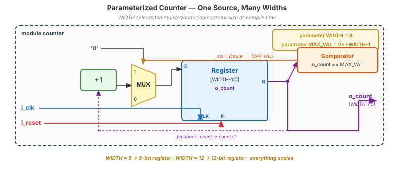

🌍 Where This Lives
In Industry
Every reusable IP block is parameterized. Xilinx's MicroBlaze CPU has ~40 parameters (cache size, multiplier presence, FPU presence). ARM's AMBA bus IP is parameterized in data width, burst length, ID width. Cadence, Synopsys, and ARM sell IP that's essentially just Verilog modules with parameters — the value is the generality. A well-parameterized module becomes a product.
In This Course
Your counter, shift register, debouncer, and UART modules all become parameterized today. Your Topic 11 UART will support 9600/115200 baud via one parameter. Your capstone wins judges by showing parameterization — it's what distinguishes “built a thing” from “built a reusable tool.”
⚠️ Parameters Are Compile-Time, Not Runtime
❌ Wrong Model
“Parameters are inputs I can change while the chip is running. I set the width to 8, then change it to 16 at runtime.”
✓ Right Model
Parameters are compile-time constants. Each instance of a module fixes its parameter values when it's instantiated, and the synthesis tool builds that specific instance with those specific widths. Different instances of the same module can have different parameter values — but within a single instance, the value is soldered in.
👁️ I Do — Parameterized Counter
module counter #(
parameter WIDTH = 8, // default
parameter MAX_VAL = 2**WIDTH-1 // derived
) (
input wire i_clk, i_reset,
output reg [WIDTH-1:0] o_count
);
always @(posedge i_clk) begin
if (i_reset) o_count <= 0;
else if (o_count==MAX_VAL) o_count <= 0;
else o_count <= o_count+1'b1;
end
endmodule
// Instantiation with override
counter #(.WIDTH(12)) u_ticker (
.i_clk(clk), .i_reset(rst),
.o_count(tick));
WIDTH=8 — instantiation without override still works. (2) Derived MAX_VAL=2**WIDTH-1 auto-updates. (3) Named override #(.WIDTH(12)). The register, adder, and comparator widths all scale with the gold parameter — that's why the diagram uses one box for any size.
🤝 We Do — localparam and $clog2
module debounce #(
parameter CLKS_STABLE = 500_000 // user knob
) (
input wire i_clk, i_reset, i_noisy,
output reg o_clean
);
// localparam = internal, NOT overridable
localparam COUNT_WIDTH =
$clog2(CLKS_STABLE);
reg [COUNT_WIDTH-1:0] r_count;
// counter increments while
// i_noisy matches r_clean;
// latches new o_clean at threshold.
endmodule![RTL block diagram of parameterized debounce. Top-right pill shows parameter CLKS_STABLE and derived localparam COUNT_WIDTH=$clog2(CLKS_STABLE). The body shows an equality compare between i_noisy (orange) and r_clean (green, feedback), feeding a COUNT_WIDTH-sized r_count register (blue/purple). A threshold comparator (orange) detects r_count == CLKS_STABLE-1 and gates the r_clean register to latch the new value. Signals colored: i_clk blue, i_reset red, i_noisy orange, o_clean green, r_count purple.](diagrams/d08_param_debounce_rtl.svg)
parameter exposes a knob. localparam is internal — derived, not overridable. $clog2 picks the smallest width that fits. Users set CLKS_STABLE; COUNT_WIDTH and the r_count register auto-size to match.
🧪 You Do — Design a Parameterized FIFO
Hard-coded 16-deep × 8-wide FIFO. Find every number that would need to change for a different size — then parameterize.
module fifo (
input wire i_clk, i_reset,
input wire i_wr, i_rd,
input wire [7:0] i_wdata, // 8-bit
output reg [7:0] o_rdata, // 8-bit
output wire o_full, o_empty
);
reg [7:0] memory [0:15]; // 16 × 8
reg [3:0] r_wptr, r_rptr; // 4-bit
reg [4:0] r_count; // 0..16 = 5 bits
// ... read/write/full/empty logic ...
endmodule![RTL block diagram of FIFO. Center: memory[0..DEPTH-1] with DEPTH rows × WIDTH bits (blue). Left: r_wptr write pointer (pink), r_rptr read pointer (brown), r_count occupancy counter (purple). Right: o_rdata (cyan), full/empty comparator (orange) producing o_full and o_empty (gold). i_wdata (indigo) enters memory; i_wr (pink), i_rd (brown), i_clk (blue), i_reset (red) on the left. The parameter pill shows DEPTH/WIDTH and the derived ADDR_W and COUNT_W localparams.](diagrams/d08_fifo_rtl.svg)
module fifo #(parameter DEPTH=16, parameter WIDTH=8) (
input wire i_clk, i_reset, i_wr, i_rd,
input wire [WIDTH-1:0] i_wdata,
output reg [WIDTH-1:0] o_rdata,
output wire o_full, o_empty);
localparam ADDR_W = $clog2(DEPTH); // pointer width
localparam COUNT_W = $clog2(DEPTH+1); // count needs DEPTH+1 values
reg [WIDTH-1:0] memory [0:DEPTH-1];
reg [ADDR_W-1:0] r_wptr, r_rptr;
reg [COUNT_W-1:0] r_count;
// ... same logic, size-agnostic ...
endmoduleOne Module, Three Instances, Three Sizes
~5 minutes
▸ COMMANDS
cd lecture_examples/week2_day08/d08_s2_ex2/
cat top_with_three_counters.v
# 4-bit, 8-bit, 16-bit counters
# from one day08_ex02_counter.v
make sim
make stat▸ EXPECTED STDOUT
=== top ===
u_cnt_4bit: 4 DFF, 3 CARRY
u_cnt_8bit: 8 DFF, 7 CARRY
u_cnt_16b: 16 DFF, 15 CARRY
Total cells: ~40
=== 15 passed, 0 failed ===▸ KEY OBSERVATION
One counter.v file produced three different hardware blocks, each correctly sized. If you needed a 32-bit version, you'd add one more line — not a new file.
🔧 Each Instance Is Its Own Hardware
$ yosys -p "read_verilog top_with_three_counters.v day08_ex02_counter.v; \
hierarchy -top top; synth_ice40; stat"
=== counter ===
multiple instances — each synthesized separately
(instance u_cnt_4bit : WIDTH=4 → 4 DFF + 3 CARRY)
(instance u_cnt_8bit : WIDTH=8 → 8 DFF + 7 CARRY)
(instance u_cnt_16b : WIDTH=16 → 16 DFF + 15 CARRY)
=== top ===
Number of cells: 40 (sum of all three instances)🤖 Check the Machine
Ask AI: “Convert this hard-coded 8-bit counter to a parameterized counter with WIDTH and MAX_VAL parameters. Use $clog2 where appropriate.”
TASK
AI parameterizes a fixed-width module.
BEFORE
Predict: parameter block, WIDTH in port widths, $clog2 for derived.
AFTER
Strong AI uses default values + localparam for derived. Weak AI only changes port widths.
TAKEAWAY
Full parameterization = every hardcoded width replaced by parameter arithmetic.
Key Takeaways
① Parameters are compile-time constants, resolved per-instance.
② Always provide default values. Always use named overrides.
③ localparam for derived constants; $clog2 for auto-sizing.
④ A well-parameterized module becomes a reusable IP block.
🔗 Transfer
Generate Blocks
Video 3 of 4 · ~9 minutes
▸ WHY THIS MATTERS NEXT
Parameters change one instance. What if you need N instances — like 8 identical debouncers for 8 buttons? Video 3 introduces generate blocks: compile-time replication of hardware. One block of code, N physical instances, scaled by a parameter. This is how processor lane counts, cache ways, and bus widths work.